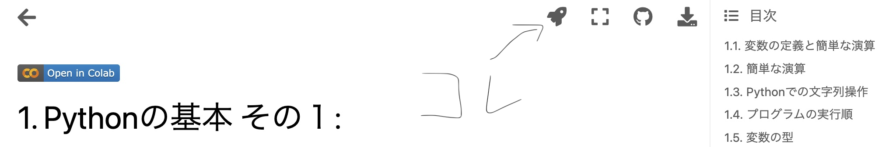

資料について#
本コンテンツは宇都宮大学の下記授業用の資料です:
データサイエンス経営学部必修科目「プログラミング演習１」
基盤科目「実践データサイエンス」
後期に実施する「実践データサイエンス」では、2024年度からは「プログラミング演習1」の講義動画を共有し、 反転学習の授業形態を採用します。
資料の使い方#
本講義では資料(≒ファイル形式)や利用する外部サービス等が幾つかある。 慣れないうちは混同するかと思うので、ここに資料自体の説明と各種アプリケーションやサービスの説明をまとめておく。
ブック#
本資料はJupyter Notebook形式で作成されたソースファイルをJupyter Bookを用いて変換することで作成されたコンテンツになっている。この形式の資料を授業内ではブックないしBookと表記・呼称する。
ノートブック#
Jupyter Notebookとは、Markdownテキスト・数式・図などを含んだドキュメント作成とPythonなどのプログラミング実行を提供する環境で、授業資料は.ipynbという拡張子のJupyterNotebook用ファイルとして作成されている。授業ではこれをノートブックやNotebookなどと表記・呼称する。
.ipynb形式のソースファイルの管理と共有には、GitHubと呼ばれる環境を利用していて、ソースファイルはこちらからも閲覧できる(この授業を受講したりプログラムを実行するのに皆さんがGitHubのアカウントを取得したりこのリンクを開いたりする必要は特段ありません)。
Jupyter Notebookを編集・実行するための環境はいくつかあるが、本授業では環境構築やそれにかかるトラブルシューティングを最小化するために、Google Colaboratoryというサービスを利用してGoogleのクラウド環境上でJupyter Nootebookを編集・実行する方式を採用している。
Note
授業に先立ってGoogleのアカウントの新規取得をお願いします
ブックは概要をとらえたり復習をするときには見やすくて便利だが、実際に自身でコードを実行したりプログラムを書く場合にはGoogle Colaboratory上でJupyter Notebookを開くことになる。
Google Colab.上でノートブックを開くには、各章の冒頭に用意された”Open in Colab”というボタンをクリックするか、上のロケットの形をしたボタンにマウスオーバーして”Colab”から開く。左の”Google Colaboratoryの使い方”や第1章のノートブックで試してみよう。参考:

不具合報告または問い合わせ#
本講義資料に関する不具合(リンク切れなど)の報告や問い合わせについては下記のフォームよりお願いします。 授業受講者からの不具合報告関しては授業やCL等で返答します。授業外の問い合わせについては、お答え出来ない場合もありますので予めご了承ください。